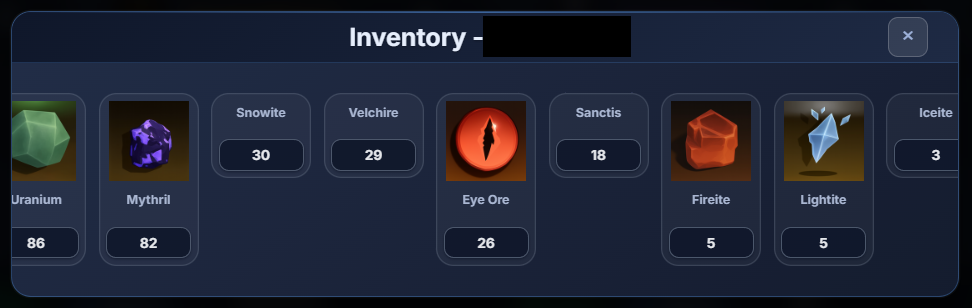
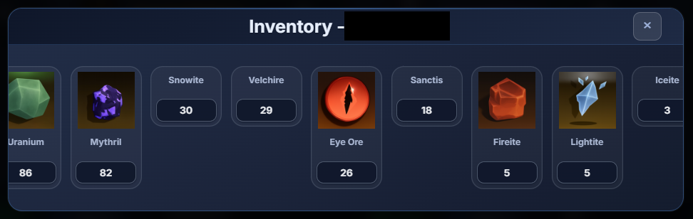

Professional Boosting Service
Fast • Safe • Real-Time Live Update
🔧 Services
- ⛏️ Ores Mining
- 💰 Cash Boosting (Monster / Mining)
- 🟣 Do Moro Quest (Prismatic Pickaxe Unlock)
- 🧩 Custom Service — whatever you need
📡 Live Update System
Monitor your account progress in real time.
No need to ask for updates — just open the dashboard.
🟢 Online Status
💰 Gold / Cash Very Fast System like 100-200k Per Hour
🎒 Inventory & Ores
⛏️ Pickaxes
🗡️ Weapon / Armor
 

⚙️ How to Enable Live Update
-
Visit https://ducky.host/
If the site is not accessible, please enable VPN 1.1.1.1
- Sign in using your Discord account
-
Click menu </> and copy all the code
- Send the full code to me — Live Update will start automatically
⏰ Response time is usually between 02:00 – 17:00 UTC.
If you prefer not to wait for replies, we highly recommend using the
Live Update system.Or you can direct log in and check the progress by yourself
at any time.
Once you finish checking, please close the game.
I will log in automatically and continue the service.